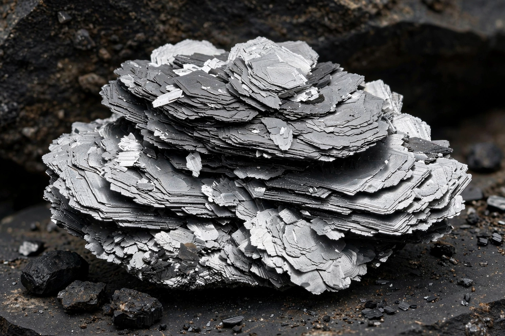

Graphite

Graphite is a crystalline form of the element carbon. It consists of layers of carbon atoms arranged in a hexagonal lattice, with weak forces between the layers that allow them to slide over one another, making graphite soft and slippery. It is the most stable form of carbon under standard conditions and occurs naturally in metamorphic rocks. Graphite conducts electricity because of the delocalisation of electrons within each layer. Its name, coined by Abraham Gottlob Werner in 1789, derives from the Greek graphein, "to write", reflecting its use in pencils.
| Category | Native element mineral |
|---|---|
| Formula | C |
| Crystal system | Hexagonal |
| Hardness | 1–2 on Mohs scale |
| Colour | Steel grey to black |
| Density | 2.09–2.23 g/cm³ |
Structure
Within each layer (a sheet of graphene), every carbon atom is bonded to three neighbours in a planar hexagonal network with sp² hybridisation; the fourth valence electron is delocalised across the sheet, giving rise to electrical conductivity. The layers are held together only by weak van der Waals forces and are separated by about 335 picometres, which explains graphite's softness, its perfect basal cleavage, and its lubricating properties.
Occurrence and production
Graphite forms by the metamorphism of carbon-rich sedimentary rocks. Major natural production comes from China, Mozambique, Brazil, and Madagascar. Synthetic graphite is manufactured by heating petroleum coke or coal-tar pitch to temperatures near 3,000 °C in the Acheson process.
Uses
The most familiar use is the "lead" in pencils, a mixture of graphite and clay. Industrial uses include refractories and crucibles, foundry facings, lubricants, electrodes for electric arc furnaces and for aluminium production, brushes in electric motors, and as a neutron moderator in some nuclear reactors. Graphite is increasingly important as the anode material in lithium-ion batteries, and its single-layer form, graphene, and its rolled form, carbon nanotubes, are major subjects of modern materials research (see two-dimensional materials).